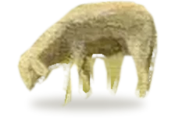
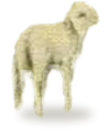
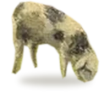
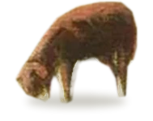
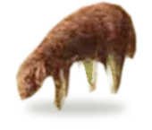
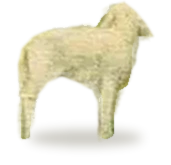
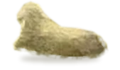
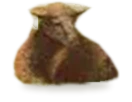
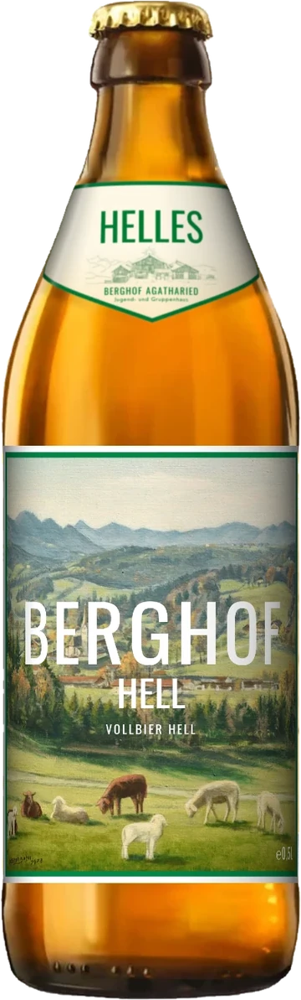

Berghof Hell , Helles aus Agatharied
Hoch oben über dem bayerischen Oberland, wo die Uhren ein wenig langsamer ticken, liegt der historische Berghof von Agatharied. Ein Haus, das seit Generationen als Ort der Zuflucht, der Gemeinschaft und der echten Auszeit bekannt ist. Genau dieses Gefühl haben wir in unserem Berghof Hell.









Das Bier
Hopfen, Malz, Wasser
Berghof Hell ist ein bayerisches Vollbier Hell: goldgelb, mild und süffig, gebraut aus nur drei Zutaten.

-
Hopfen
Hopfen schenkt dem Hellen seine feine, milde Würze und ein frisches Aroma.
-
Malz
Helles Gerstenmalz gibt dem Bier die goldene Farbe und seinen runden Körper.
-
Wasser
Weiches, klares Wasser: die Grundlage für ein süffiges bayerisches Helles.
- Sorte
- Vollbier Hell
- Alkohol
- 4,9 % vol
- Inhalt
- 0,5 l Flasche
- Zutaten
- Wasser, Gerstenmalz, Hopfen
Gebraut in kleinen Mengen von der Brauerei & Brennerei Silbernagl in Hausham, einem Familienbetrieb in fünfter Generation mit eigenem Getränkeladen und Schnapsbrennerei, gleich beim Förderturm, knapp einen Kilometer Luftlinie vom Berghof entfernt.
Geschichte
Der Berghof in Agatharied
Erstmalig 1556 ist der Berghof in Agatharied urkundlich eingetragen. Heute ist er Jugend- und Gruppenhaus im bayerischen Oberland und die Heimat des Berghof Hell. Das Haus steht auf 850 Metern Höhe.
-
Erste Erwähnung als „halbe Schwaige zu Pergen“ im Besitz des Klosters Schliersee.
-
Der Hof gehört kurzzeitig dem Haushamer Bergwerk.
-
Anton Zugliani erwirbt den Berghof.
-
Heute
Jugend- und Gruppenhaus, geführt von Familie Hofer in vierter Generation.

Standort
Hier gibt's das Bier
Berghof Hell bekommst du direkt am Berghof in Agatharied im Oberland zwischen Miesbach und Schliersee.
-
Berghof Agatharied
Berghof Hell direkt ab Hof.
Berg 112
83734 Hausham (Agatharied)Ansprechpartner: Laurenz Hofer
Verkauf nach Absprache
Route planen (Google Maps)